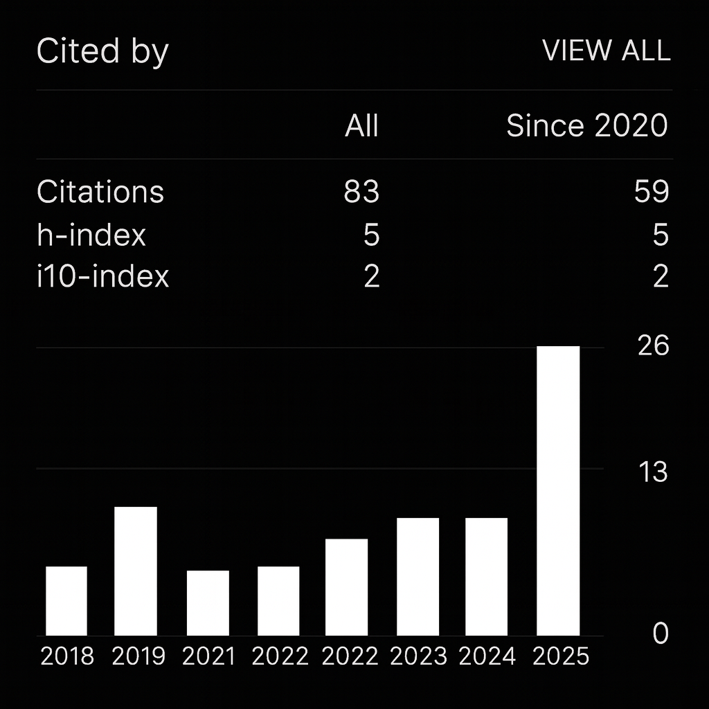

Selected publications
-
Tunability and Ordering in 2D Arrays of Magnetic Nanoparticles Assembled via Extreme Field GradientsWe directed magnetite nanoparticles to self-assemble on hard-disk media using nanoscale magnetic field gradients. Closely spaced magnetic reversals yielded a single centered feature with hexatic ordering, explained by Langevin simulations. Slight changes in solvent polarity disrupted ordering and shifted particles toward the transitions. Link
-
Magnetic nanoparticle arrays self-assembled on perpendicular magnetic recording mediaWe directed magnetic nanoparticles to self-assemble on templates written into perpendicular recording media and tracked growth over time. Early structures were ~150 nm wide and ~14 nm high; longer times yielded ~550 nm wide and ~35 nm high features with stronger collective magnetic behavior. Field gradients near recorded transitions drive the growth.
-
On the partial volume effect in magnetic particle imagingWe analyze how finite voxel size causes signal mixing in MPI and quantify resulting biases in resolution and quantitation. Using simple phantoms of different sizes and shapes at uniform tracer concentration, we found that large objects reached a consistent maximum signal proportional to concentration, while small objects below the effective resolution showed signal loss (spill-out). These results mirror classic PET behavior, suggesting that PET-inspired PVE corrections can improve quantitative accuracy in MPI. Link
-
A physics-based computational forward model for efficient image reconstruction in magnetic particle imagingWe developed a physics-based MPI reconstruction that doesn't rely on calibration scans, works across different scan setups, and scales to high resolution. We turn core MPI equations into a short sequence of fast steps accounting for scanner motion, field strength, coil sensitivity, and receive-chain filtering. Tested on simulated and preclinical data, the method produces accurate images efficiently. Link
-
Preclinical and Clinical-Scale Magnetic Particle Imaging of Natural Killer Cells: in vitro and ex vivo Demonstration of Cellular Sensitivity, Resolution, and QuantificationWe labeled NK-92 cells with iron-oxide nanoparticles without affecting viability or cytolytic function. Using MPI, we tracked cells quantitatively in mouse brain, bone, and lung, detecting ~3.1×10⁴ cells and localizing within <1 mm of injection sites; we also showed feasibility on a clinical-scale scanner at 4×10⁷ cells. MPI provides early, sensitive readouts of NK cell delivery and location. Link
-
Magnetic particle imaging enables nonradioactive quantitative sentinel lymph node identification: feasibility proof in murine modelsWe tested a nonradioactive alternative to SLNB using MPI lymphography. Iron-oxide tracers enabled sensitive, quantitative mapping of the first draining lymph node within 1 hour, with signal persisting 4–6 days and matching ex vivo validation. This supports using MPI to plan sentinel node surgery as clinical-scale systems mature.
-
Magnetic-Field-Directed Self-Assembly of Programmable Mesoscale ShapesWe used PMR media to "write" templates that direct magnetic nanoparticles to self-assemble into user-designed 2D shapes, with features as small as a single 30 nm particle. Particles assemble at boundaries between oppositely magnetized regions, forming 1–2 layers (≈30–350 nm widths). Lateral growth precedes stacking, enabling layer-by-layer control via template design.
